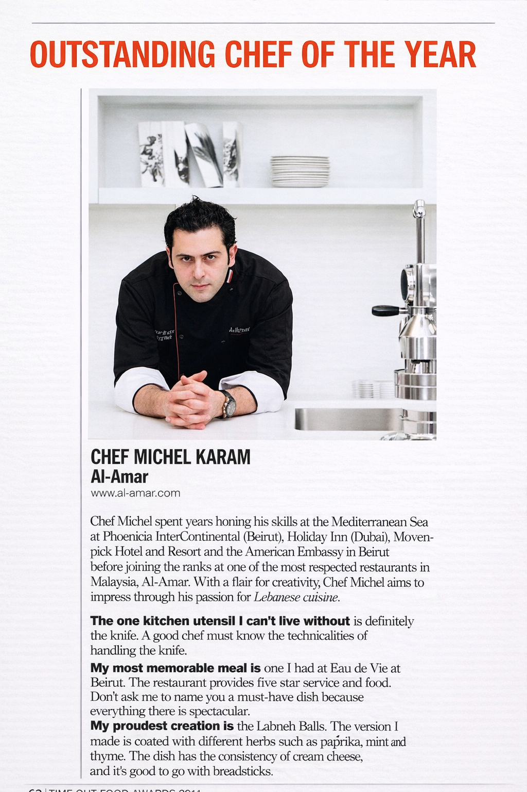
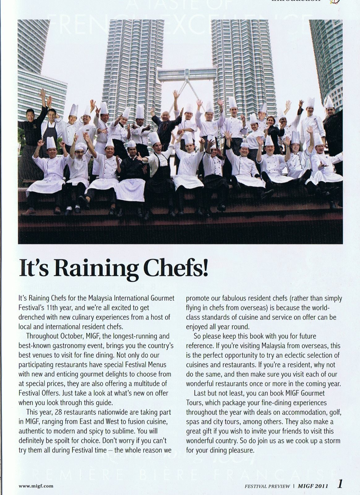
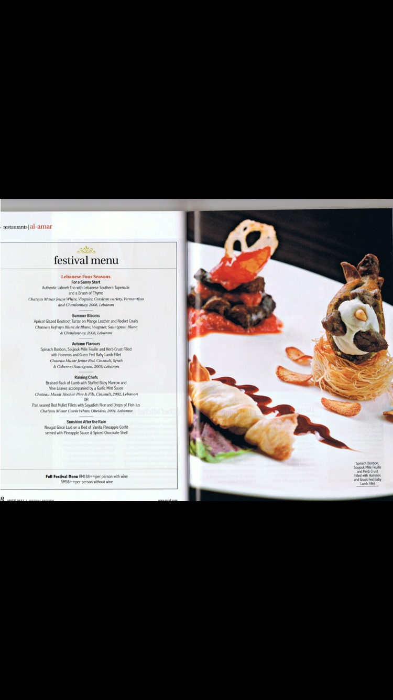
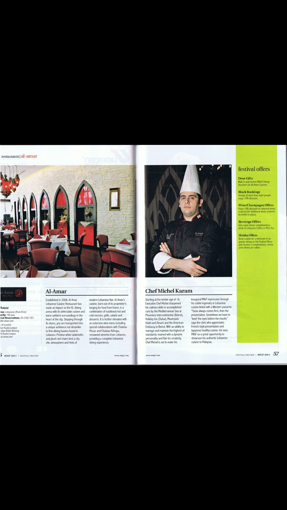
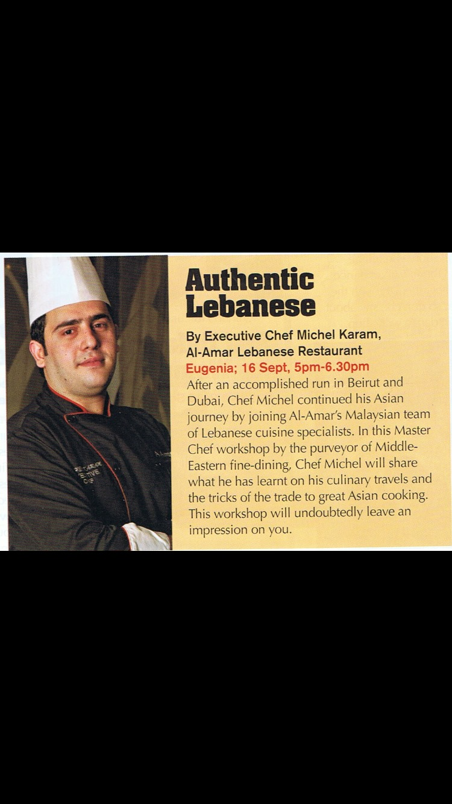

Time Out Feature
Editorial recognition connected to culinary distinction and chef visibility.
Editorial Features
A selection of magazine appearances, culinary features, and editorial moments highlighting Michel Karam’s work across hospitality, cuisine, and professional distinction.

Editorial Presence
This page brings together a selection of editorial features, magazine appearances, and published moments connected to Michel Karam’s culinary career.
Seen together, these features reflect a professional profile shaped through sustained work in premium hospitality environments rather than short-lived visibility.
Selected editorial appearances across culinary media, hospitality coverage, and professional features.
Featured Press
Press coverage captures the public-facing side of a culinary career, recording moments of distinction, visibility, and wider professional attention.
In Michel Karam’s case, these features sit alongside a broader record of executive kitchen leadership, international experience, and long-term work across premium hospitality operations.
Selected Features
A visual selection of magazine covers, culinary features, and editorial highlights.




Selected Coverage
A concise selection of published appearances and editorial features.
Editorial recognition connected to culinary distinction and chef visibility.
Published features linked to the Malaysia International Gastronomy Festival.
Editorial coverage connected to Al Amar and related culinary presentation.
Michel Karam
“Visibility has value only when the work behind it can stand on its own.”